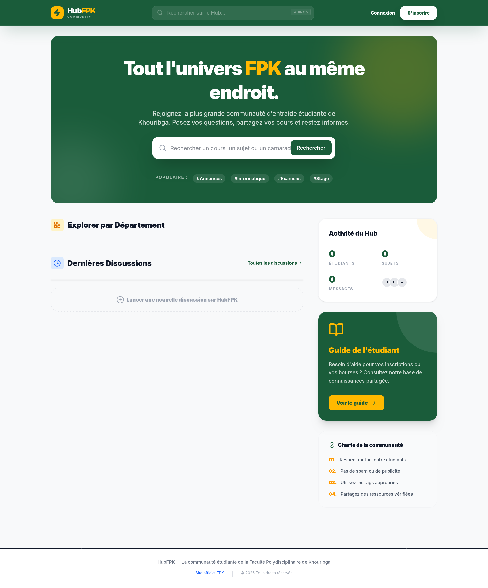
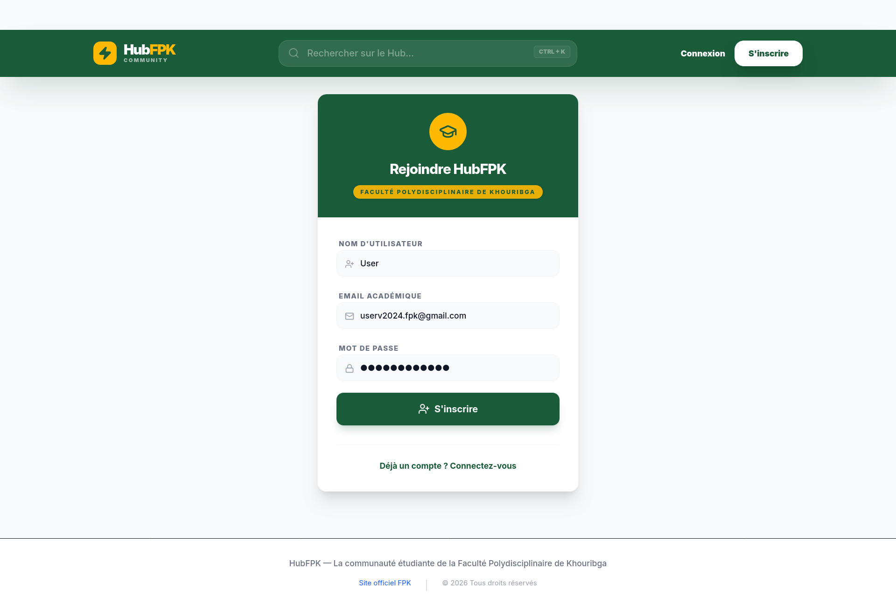
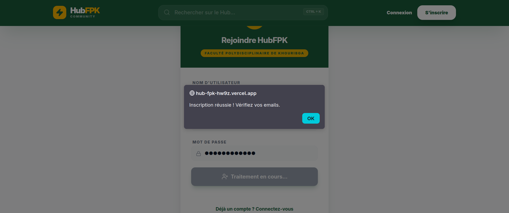
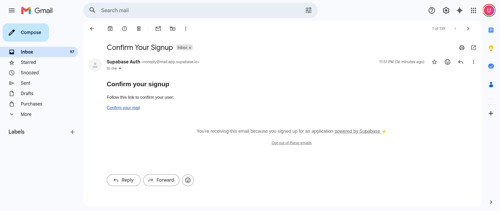
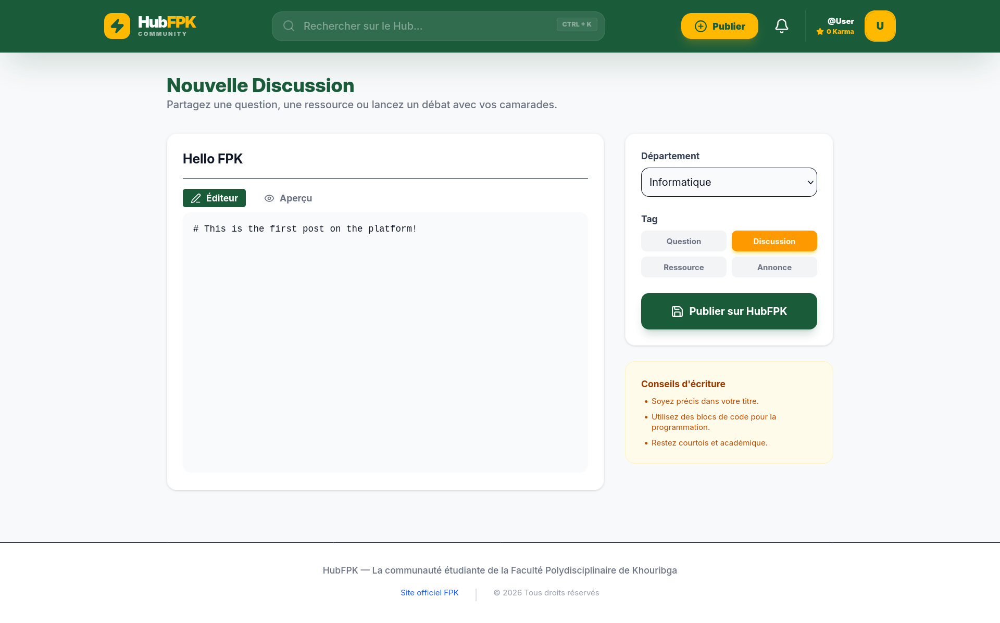
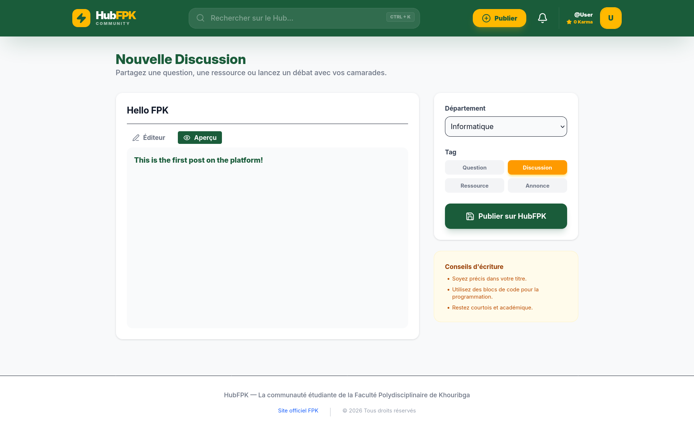
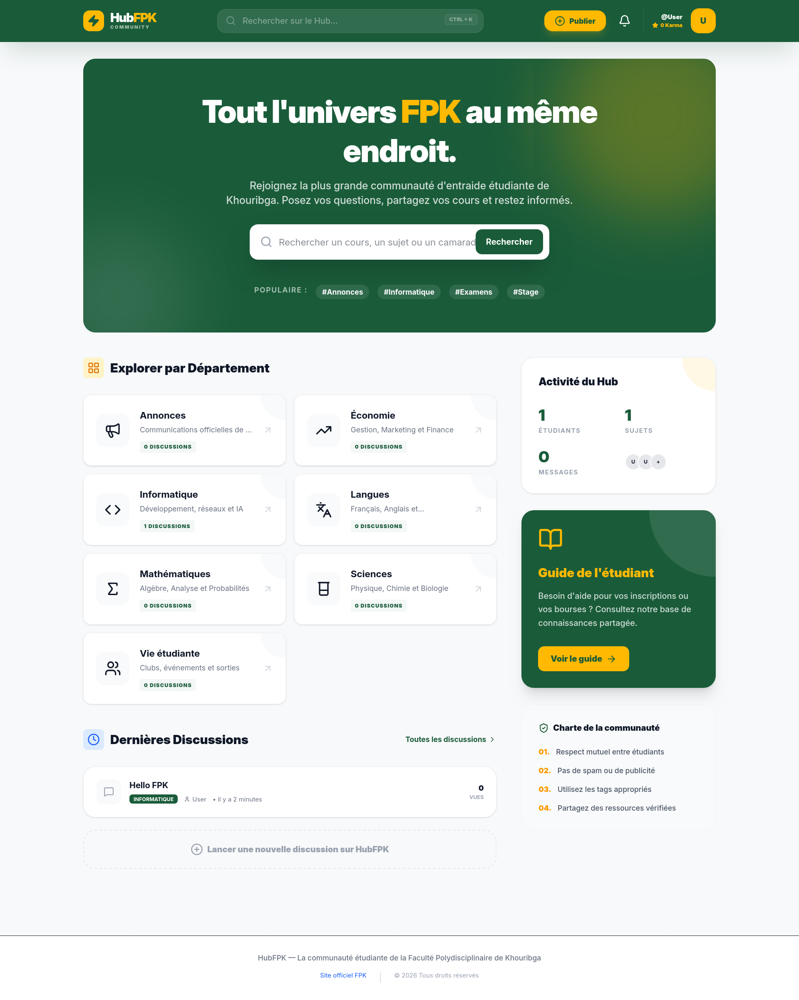
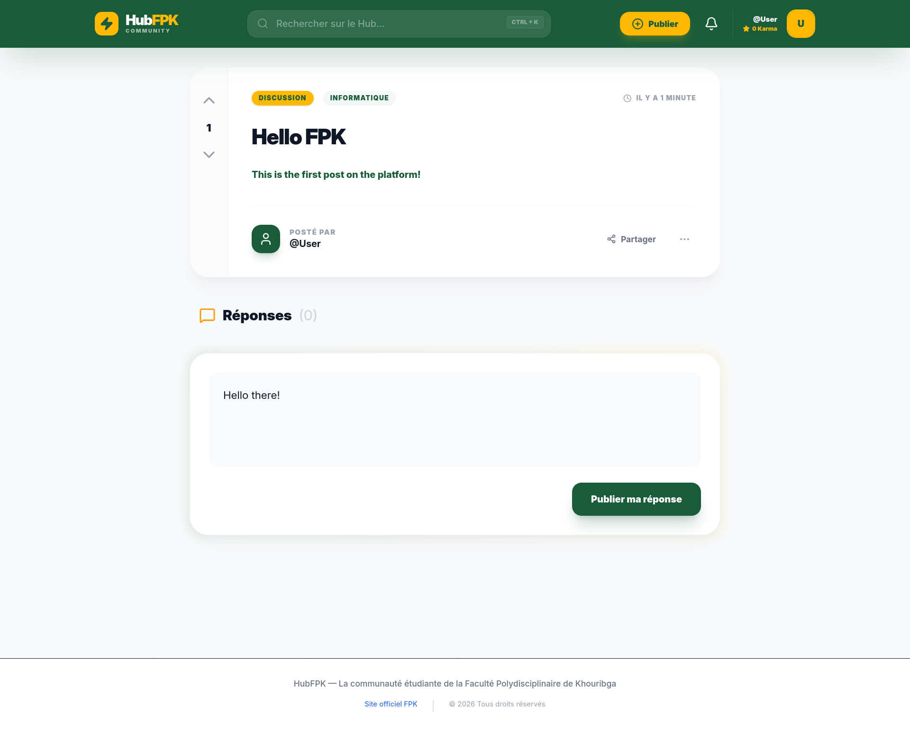

HubFPK
Plateforme Communautaire Full-Stack pour la Faculté Polydisciplinaire de Khouribga
Réalisé par


Contexte & Problématique
Au sein de la Faculté Polydisciplinaire de Khouribga (FPK), les étudiants manquent d'un espace numérique structuré pour échanger, s'entraider et partager des ressources. Les canaux existants - groupes WhatsApp éphémères, pages Facebook non structurées - ne permettent pas de capitaliser sur les questions posées ni de constituer une mémoire collective.
HubFPK répond à ce besoin en offrant un forum communautaire moderne inspiré de Reddit, Stack Overflow et Discourse, entièrement dédié à la vie académique de la FPK.
Forum Structuré
Centraliser les discussions par département académique (Informatique, Mathématiques, Économie, etc.) dans des fils de discussion organisés, avec tags, recherche et Markdown.
Votes & Karma
Un système de votes ±1 (upvote/downvote) inspiré de Reddit permet de valoriser les contributions de qualité et de construire un score de réputation (karma) pour chaque étudiant.
Temps Réel
Grâce aux WebSockets de Supabase Realtime, les notifications (nouvelles réponses, votes) apparaissent instantanément sans rechargement de page, offrant une expérience vivante.
Sécurité RLS
Toutes les tables sont protégées par le Row Level Security de PostgreSQL, garantissant que chaque utilisateur ne peut modifier que ses propres données, même en accès direct à la base.
Sources d'Inspiration
La conception de HubFPK s'est inspirée de trois plateformes communautaires qui ont révolutionné les échanges en ligne. Nous avons adapté leurs concepts fondamentaux au contexte académique de la FPK.
1,7 milliard d'utilisateurs actifs
Ce qu'on a retenu
Catégories thématiques (subreddits → départements), système de votes upvote/downvote, karma utilisateur et fils de discussion avec réponses imbriquées.
Référence Q&A technique
Ce qu'on a retenu
Système de tags (Question, Discussion, Ressource, Annonce), support complet du Markdown pour le formatage des publications, compteur de vues.
Forum open-source moderne
Ce qu'on a retenu
Design épuré avec catégories colorées, notifications en temps réel sans rechargement, profils utilisateurs riches avec réputation.
Architecture & Stack Technique
HubFPK est une application Full-Stack découplée en trois couches indépendantes : un frontend React, un backend Express et une base PostgreSQL sur Supabase.
[Client React / Vite] ─────► [Backend Express.js] ─────► [Supabase (PostgreSQL)]
│ ▲
└──────────────── (Supabase JS Client) ────────────────────┘
(Auth, Realtime, opérations directes)
| Composant | Technologie | Description / Rôle |
|---|---|---|
Base de Données |
PostgreSQL via Supabase | Base relationnelle avec RLS, triggers automatiques, fonctions stockées et Realtime channels (WebSocket). |
Backend API |
Node.js / Express 5.2 | 7 modules de routes RESTful (catégories, threads, posts, votes, profils, notifications, stats). |
Frontend |
React 19 / Vite 8 / TailwindCSS 4.2 | SPA moderne avec routage client, composants réutilisables, skeleton loading et design responsive. |
Contenu |
react-markdown / Lucide Icons | Éditeur Markdown avec aperçu en direct et icônes SVG dynamiques pour les catégories. |
Temps Réel |
Supabase Realtime (WebSocket) | Notifications instantanées via postgres_changes sans polling. Abonnement par utilisateur. |
Hébergement |
Vercel (Frontend + Backend) | Déploiement automatique depuis GitHub, CDN mondial, HTTPS natif, serverless functions. |
Interfaces de l'Application
Découvrez ci-dessous les captures d'écran de l'application HubFPK en production. chaque écran illustre une fonctionnalité clé de la plateforme.

Page d'Accueil
Le point d'entrée de HubFPK. Un hero section avec barre de recherche centrale et tags populaires. En dessous, la grille des 7 départements (Informatique, Mathématiques, Économie, Sciences, Langues, Vie étudiante, Annonces) avec icônes dynamiques Lucide et compteurs de discussions. La sidebar affiche les statistiques en temps réel (étudiants, sujets, messages), un guide de l'étudiant et la charte communautaire.

Inscription Sécurisée
L'inscription se fait via Supabase Auth avec email, nom d'utilisateur et mot de passe. Un trigger SQL handle_new_user() crée automatiquement le profil de l'étudiant dans la table profiles, avec un karma initial de 0. Le même composant gère aussi la connexion selon l'URL (/login ou /register).

Confirmation par Email
Après validation du formulaire d'inscription, une notification contextuelle invite l'utilisateur à vérifier sa boîte mail pour confirmer son compte. Cette étape sécurise l'inscription et garantit la validité des adresses.

Validation du Compte
Un email contenant un lien sécurisé est automatiquement envoyé via Supabase Auth. Une fois le lien cliqué, le compte de l'étudiant est activé et il est prêt à participer aux discussions de la plateforme.

Nouvelle Discussion - Éditeur Markdown
L'éditeur de création de discussion offre un champ titre, un éditeur Markdown pleine page avec police monospace, un sélecteur de département (alimenté dynamiquement par l'API), et un système de tags visuels (Question, Discussion, Ressource, Annonce). Un encadré « Conseils d'écriture » guide les étudiants.

Aperçu Markdown en Direct
Avant publication, l'étudiant peut basculer en mode aperçu pour visualiser le rendu final de son contenu Markdown. Les titres, le gras, l'italique, les listes et les blocs de code sont rendus via la bibliothèque react-markdown, garantissant des publications riches et bien formatées.

Mise à Jour Dynamique
Après publication d'une nouvelle discussion, la page d'accueil se met à jour automatiquement. Les compteurs de statistiques (sujets, messages) sont recalculés en parallèle via Promise.all(), et le nouveau thread apparaît en tête de la liste « Dernières Discussions » avec les informations de l'auteur, la catégorie et le timestamp.

Vue d'un Fil de Discussion
Le cœur de l'expérience HubFPK. chaque thread affiche le contenu en Markdown, l'auteur avec lien vers son profil, la catégorie, le tag, la date relative et le compteur de vues. Le système de vote (upvote/downvote) fonctionne en toggle : cliquer deux fois sur le même vote l'annule. Les réponses sont imbriquées sur 1 niveau et arrivent en temps réel via Supabase Realtime.
Base de Données
La base de données PostgreSQL hébergée sur Supabase est structurée autour de 6 tables principales interconnectées, protégées par le Row Level Security (RLS) et automatisées par 3 triggers SQL.
auth.users (Supabase Built-in)
│
▼
profiles (id PK → auth.users) ← Trigger: handle_new_user()
│
├──► threads (user_id FK)
│ │
│ ├──► posts (thread_id FK)
│ │ └──► posts (parent_post_id FK - 1 niveau)
│ │
│ └──► votes (target_id polymorphe) ← Trigger: handle_new_notification()
│
└──► notifications (user_id FK)
categories ──► threads (category_id FK)
└─ 7 catégories seed : Informatique, Mathématiques, Économie, Langues, Sciences, Vie étudiante, Annonces
| Table | Clé Primaire | Rôle | RLS |
|---|---|---|---|
| profiles | UUID → auth.users | Profils étudiant (username, karma, bio, avatar) | Lecture publique / Écriture propriétaire |
| categories | UUID auto | 7 départements académiques avec icônes Lucide | Lecture publique |
| threads | UUID auto | Fils de discussion (Markdown, tags, vues, épingles) | Lecture publique / Écriture auteur |
| posts | UUID auto | Réponses avec nesting 1 niveau (parent_post_id) | Lecture publique / Écriture auteur |
| votes | UUID auto | Votes ±1 polymorphes (thread ou post), UNIQUE par user | Lecture publique / Écriture propriétaire |
| notifications | UUID auto | Notifications auto (reply + vote), marquable comme lue | Privé / Propriétaire uniquement |
API REST - Backend Express
Le backend expose 7 modules de routes sous le préfixe /api/, servant de pont entre le frontend React et la base Supabase. Le CORS est restreint à l'URL du frontend déployé.
| Endpoint | Méthode | Fonctionnalité |
|---|---|---|
| /api/categories | GET | Liste des 7 départements avec comptage de threads (Promise.all) |
| /api/threads | GET / POST | Liste filtrée (catégorie, recherche ilike), création. Votes batch. Threads épinglés en tête. |
| /api/threads/:id | GET | Thread complet + posts + profils + votes. Incrémente view_count. |
| /api/posts | POST | Création de réponse + notification auto à l'auteur du thread. |
| /api/votes | POST | Vote toggle : même valeur → suppression, différente → mise à jour, nouveau → création. |
| /api/profiles/:username | GET | Profil complet + threads + posts de l'utilisateur. |
| /api/profiles/leaderboard/top | GET | Top 10 utilisateurs par karma (classement). |
| /api/notifications/:userId | GET / PATCH | Notifications non lues + marquage comme lues. |
| /api/stats | GET | Compteurs globaux (users, threads, posts) en parallèle. |
Évaluation & Analyse Critique
Une analyse approfondie du projet a été réalisée afin d'évaluer sa maturité technique. Voici la synthèse des scores attribués à chaque dimension :
| Aspect | Score | Commentaire |
|---|---|---|
| UI / UX | 8 / 10 | Design moderne et cohérent, animations, skeleton loading, palette vert/ambre |
| Architecture | 7 / 10 | Découplée et claire, double voie d'accès BDD à harmoniser |
| Fonctionnalités | 7 / 10 | Bon cœur fonctionnel (13+ features), bugs critiques corrigés |
| Qualité de Code | 7 / 10 | Lisible, structuré, boilerplate nettoyé, composants réutilisables |
| Base de Données | 7 / 10 | Schéma bien pensé, RLS complet, triggers automatiques |
| Performance | 6 / 10 | Promise.all, WebSocket, skeleton - mais N+1 queries et pas de pagination |
| Sécurité | 5 / 10 | RLS + CORS corrigé, mais auth backend (JWT middleware) reste à implémenter |
Conclusion & Perspectives
HubFPK est une plateforme communautaire complète et fonctionnelle, déployée en production sur Vercel et accessible à tous les étudiants de la FPK. En combinant un frontend React moderne, une API REST Node.js/Express et une base PostgreSQL sécurisée par RLS, le projet démontre une maîtrise des compétences Full-Stack modernes.
Les perspectives d'évolution incluent : la sécurisation complète du backend via un middleware JWT, la validation des emails académiques (@fpk.ac.ma), l'ajout de la pagination et du dark mode, l'intégration de notifications push, et à terme le développement d'une application mobile Flutter ou React Native.